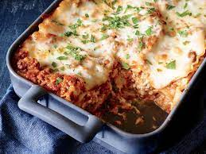

lasagna

Description
Lasagna (plural “lasagne”) is a flat and expanded pasta sheet, traditionally made in Italy with Parmigiano-Reggiano (Parmesan cheese), Béchamel sauce (white sauce), and ragù (a meat-based sauce). The dish is made by stacking lasagna sheets on top of each other with meats, vegetables, cheeses, and tomato sauce between.
Ingredients
- Tomatoes
- Lasagna sheets
- Parmigiano-Reggiano
- Basil
Steps
- In a Dutch oven, cook sausage, ground beef, onion, and garlic over medium heat until well browned.
- Stir in crushed tomatoes, tomato paste, tomato sauce, and water.
- Season with sugar, basil, fennel seeds, Italian seasoning, 1 teaspoon salt, pepper, and 2 tablespoons parsley.
- Simmer, covered, for about 1 1/2 hours, stirring occasionally.